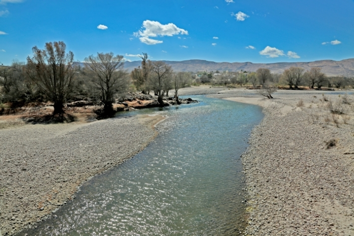

La Cuenca del Nazas
La Región Hidrológica del Nazas (RH 36)
México está dividido en treinta y siete regiones hidrológicas administradas por la Comisión Nacional del Agua (CONAGUA) con el fin de recabar de manera mas eficiente información hidrológica y de calidad del agua.
La región hidrológica en donde se encuentran el río Nazas y la Comarca Lagunera es la número 36 y tiene una superficie de 92,000 km2 que se extienden desde la Sierra Madre Occidental hasta la laguna de Mayrán. Su superficie abarca municipios pertenecientes a dos estados del norte de la República Méxicana: Durango y Coahuila.
Esta cuenca es Endorréica o Cerrada. Tiene su origen en las partes altas de la sierra de Durango, cruza los valles y desemboca en la llanura, para descargar finalmente en la laguna antes mencionada. Antes de la construcción de las presas, la laguna contenía agua casi permanéntemente, sin embargo en la actualidad, su lecho está completamente seco.
La Cuenca del Nazas cuenta con tres áreas; la parte alta, que mide aproximádamente 19,000 Km2 y abarca desde el parteaguas hasta la presa Lázaro Cádenas y comprende las subcuencas de los ríos Santiago, Tepehuanes, Sextín y Ramos. Esta parte del Nazas es la zona donde se da una gran aportación de agua. Se cuentan con fuertes pendientes y una precipitación superior a los 500mm. Aquí se genera cerca del 85% de los escurrimientos superficiales cuantificados en la cuenca del Nazas.
La parte media está comprendida entre las presas Lázaro Cárdenas y Francisco Zarco. Aquí se genera un poco menos del 15% del escurrimiento total anual. Esta área contiene los arroyos que confluyen por los margenes derecho e izquierdo del río como lo son el Arroyo de Naitcha y el río del Peñon.
La cuenca baja comprende desde aguas abajo de la presa Francisco Zarco hasta la Laguna de Mayrán, y tiene una superficie aproximada de 13,500 km2. En esta región el resto de los escurrimientos no son tan importantes y únicamente son aprovechados para obras de abrevadero o captación que se localizan en las orillas de las serranías. Esta parte de la cuenca se encuentra en una zona árida o semiárida en la región Norcentral de México.

En el caso del Cañón de Fernández en la cuenca baja, este balance resulta positivo con una aportación anual de 81 hm3 para el mismo periodo.
Mapas Interactivos